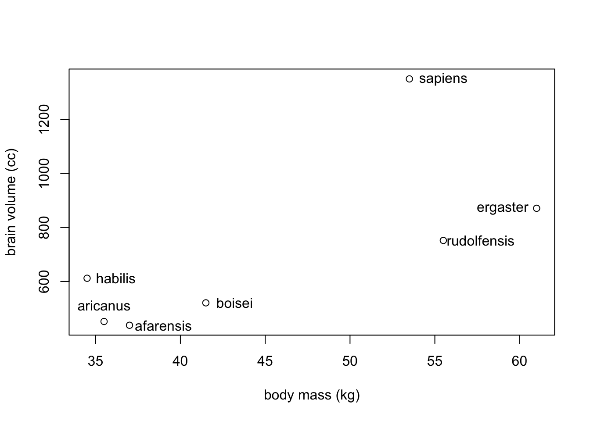
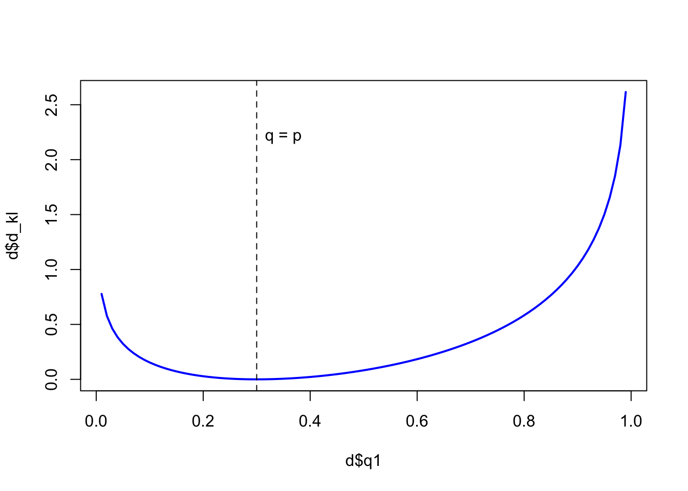
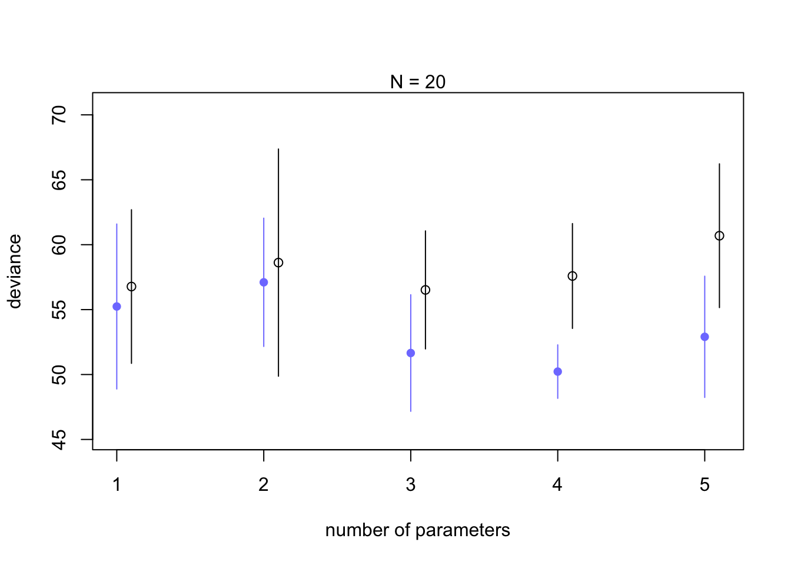

Chapter 7 Ulysses’ compass
The hero of Homer’s Odyssey, Ulysses, had two navigate between two dire consequences to complete his voyage. On one side, a beast with many heads and a taste for men, on the other side, a sea monster that sank boats. In statistical modelling, we are navigating equally treacherous waters while trying to avoid two things
- Overfitting
- Underfitting
Both dangers provide the same result, poor predictions. All this while also avoiding confounds as we’ve seen.
7.1 The problem with parameters
Most people will describe the performance of a model by the \(R^2\) term or amount of variance explained
\[R^{2} = \frac{\text{var(outcome)} - \text{var(residuals)}} {\text{var(outcome)}} = 1 - \frac{\text{var(residuals)}}{\text{var(outcome)}}\]
But \(R^2\) is misleading because adding in more predictor variables almost always improves model fit, even if they are a bunch of random numbers that aren’t related to the outcome.
7.1.1 More parameters (almost) always improve fit
Unfortunately overfitting happens automatically. To see this in action, we will look at seven hominin species’ average body mass and brain volume.
sppnames <- c("afarensis", "aricanus", "habilis","boisei","rudolfensis", "ergaster","sapiens")
brainvolcc <- c(438, 452, 612, 521, 752, 871, 1350)
masskg <- c(37.0, 35.5, 34.5, 41.5, 55.5, 61, 53.5)
d <- data.frame(species=sppnames, brain=brainvolcc, mass=masskg)
If we were interested in brain volume as a function of body mass, we could fit a polynomial regression (see ch. 4). But first we would have to standardize the parameters. Here we do the same as we normally do with the predictor, body mass. The outcome, brain volume, we have in proportion of the largest brain. This will avoid negative brain values.
d$mass_std <- (d$mass - mean(d$mass))/sd(d$mass)
d$brain_std <- d$brain / max(d$brain)Let’s build the linear model first. We will consider \(\sigma\) to be log-normal to keep it positive. We will also include rather vague priors for \(\alpha\) and \(\beta\).
library(rethinking)
m7.1 <- quap(
alist(
brain_std ~ dnorm(mu, exp(log_sigma)),
mu <- a + b*mass_std,
a ~ dnorm(0, 0.5),
b ~ dnorm(0, 10),
log_sigma ~ dnorm(0, 1)
), data = d
)Rethinking OLS and Bayesian
m7.1_OLS <- lm(brain_std ~ mass_std, data = d)
post <- extract.samples(m7.1_OLS)Now let’s calculate the \(R^{2}\) value for our linear model
set.seed(11)
s <- sim(m7.1)
r <- apply(s, 2, mean) - d$brain_std
resid_var <- var2(r)
outcome_var <- var2(d$brain_std)
1 - resid_var/outcome_var## [1] 0.4731086And let’s write a function that we can quickly apply to other models
R2_is_bad <- function(quap_fit){
s <- sim(quap_fit, refresh = 0)
r <- apply(s, 2, mean) - d$brain_std
1 - var2(r)/var2(d$brain_std)
}This is our second degree polynomial. It is just adding a secondary predictor that is based on the same data as m7.1.
m7.2 <- quap(
alist(
brain_std ~ dnorm(mu, exp(log_sigma)),
mu <- a + b[1]*mass_std + b[2]*mass_std^2,
a ~ dnorm(0.5,1),
b ~ dnorm(0, 10),
log_sigma ~ dnorm(0, 1)
), data = d, start = list(b=rep(0,2))
)Note: quap() needs to know how many \(\beta\) values you have so we set this with a start list
Now we will write additinal higher order polynomials, each increasing in degree
m7.3 <- quap(
alist(
brain_std ~ dnorm(mu, exp(log_sigma)),
mu <- a + b[1]*mass_std + b[2]*mass_std^2 +
b[3]*mass_std^3,
a ~ dnorm(0.5,1),
b ~ dnorm(0, 10),
log_sigma ~ dnorm(0, 1)
), data = d, start = list(b = rep(0,3))
)
m7.4 <- quap(
alist(
brain_std ~ dnorm(mu, exp(log_sigma)),
mu <- a + b[1]*mass_std + b[2]*mass_std^2 +
b[3]*mass_std^3 + b[4]*mass_std^4,
a ~ dnorm(0.5,1),
b ~ dnorm(0, 10),
log_sigma ~ dnorm(0, 1)
), data = d, start = list(b = rep(0,4))
)
m7.5 <- quap(
alist(
brain_std ~ dnorm(mu, exp(log_sigma)),
mu <- a + b[1]*mass_std + b[2]*mass_std^2 +
b[3]*mass_std^3 + b[4]*mass_std^4 +
b[5]*mass_std^5,
a ~ dnorm(0.5,1),
b ~ dnorm(0, 10),
log_sigma ~ dnorm(0, 1)
), data = d, start = list(b = rep(0, 5))
)\(\sigma\) here needs to be replaced with a constant to get an output.
m7.6 <- quap(
alist(
brain_std ~ dnorm(mu,0.001),
mu <- a + b[1]*mass_std + b[2]*mass_std^2 +
b[3]*mass_std^3 + b[4]*mass_std^4 +
b[5]*mass_std^5 + b[6]*mass_std^6,
a ~ dnorm(0.5,1),
b ~ dnorm(0, 10)
), data = d, start = list(b = rep(0,6))
)Now we can plot all our models. Below is a sample of plot code for a single model. You can also use brain_plot from the rethinking package.
#7.1
post <- extract.samples(m7.1)
mass_seq <- seq(from = min(d$mass_std), to = max(d$mass_std), length.out = 100)
l <- link(m7.1, data = list(mass_std=mass_seq))
mu <- apply(l, 2, mean)
ci <- apply(l, 2, PI)
plot(brain_std ~ mass_std, data = d, xlab = 'body mass (std)', ylab = 'brain volume (cc)')
lines(mass_seq, mu)
shade(ci, mass_seq)
mtext(paste("m7.1: R^2 = ", round(R2_is_bad(m7.1), 2)))
To get an output for m7.6, sigma had to be a constant small number because the model passes through each point without variance. You can also notice that these high \(R^2\) models do very poorly in data gaps. Between 41 and 54 kg, the higher order models go wildly positive, and then steeply dip between 55 and 60 kg.
7.1.2 Too few parameters hurts, too
Underfitting does a poor job at describing existing data and also lacks predictive power. To see if a model is underfit, you could remove data points one at a time and see how sensitive the model is to change. Overfit models will be very sensitive to change.
Let’s plot the linear model and the 3rd degree polynomial for comparison.
par(mfrow=c(1,2))
brain_loo_plot(m7.1)
brain_loo_plot(m7.4)
The (underfit) linear model doesn’t change much compared to the wild lines in model m7.3.
7.2 Entropy and accuracy
7.2.1 Firing the weatherperson
Accuracy starts with picking the target. We should be worried about:\
1. Cost-benefit analysis. What is the cost of being wrong? How much do we win by if we are right?
2. Accuracy in context. How do we judge accuracy in a way that accounts for how much a model could imrpove prediction.
Suppose in Vancouver, CBC puts out a 10 day forecast that has uncertain predictions of rain. And say CTV says theirs is better and only predicts sunshine for the 10 days.
CBC forecast| Day | 1 | 2 | 3 | 4 | 5 | 6 | 7 | 8 | 9 | 10 |
| Prediction | 1 | 1 | 1 | 0.6 | 0.6 | 0.6 | 0.6 | 0.6 | 0.6 | 0.6 |
| Observed | 1 | 1 | 1 | 0 | 0 | 0 | 0 | 0 | 0 | 0 |
| Day | 1 | 2 | 3 | 4 | 5 | 6 | 7 | 8 | 9 | 10 |
| Prediction | 0 | 0 | 0 | 0 | 0 | 0 | 0 | 0 | 0 | 0 |
| Observed | 1 | 1 | 1 | 0 | 0 | 0 | 0 | 0 | 0 | 0 |
If we are define a metric of accuracy to be hit rate to be the average chance of a correct prediction, CBC would have a score of 5.8 hits (\(3 \times 1 + 7 \times 0.4\)) across 10 days (5.8 / 10 = 0.58) and CTV would have 7 hits (\(3 \times 0 + 7 \times 1\)) for a score of 0.7. CTV wins by this metric.
7.2.1.1 Cost and benefits
As a member of the public you may choose your own happiness as the metric to score these forecasts. If you don’t like getting caught in the rain but also dislike carrying umbrellas, you may have a different scoring system. Say getting caught in the rain is -5 happiness points, and carrying an umbrella is -1 points. The probability of you carrying an umbrella is the same as the probability of rain.
CBC <- rep(c(-1, -0.6), times = c(3,7))
CTV <- rep(c(-5, 0), times = c(3,7))
d <- rbind(Day, Observed, CBC, CTV)
knitr::kable(d, "html")| Day | 1 | 2 | 3 | 4 | 5 | 6 | 7 | 8 | 9 | 10 |
| Observed | 1 | 1 | 1 | 0 | 0 | 0 | 0 | 0 | 0 | 0 |
| CBC | -1 | -1 | -1 | -0.6 | -0.6 | -0.6 | -0.6 | -0.6 | -0.6 | -0.6 |
| CTV | -5 | -5 | -5 | 0 | 0 | 0 | 0 | 0 | 0 | 0 |
So now the CBC weather forecast is costing you -7.2 happiness points where CTV’s forecast is double that at -15.
7.2.1.2 Measuring accuracy
The hit rate of the forecasts calculated above are not the only way to determine accuracy. If we instead wanted to compute the probability of correctly predicting the whole sequence of days, this would be similar to the joint likelihood. So if we look at the CBC forecast, \(1^{3} \times 0.4^{7} \approx 0.002\) doesn’t seem like a great probability. But when compared to the CTV forecast \(0^{3} \times 1^{7} = 0\) there is no way for the forecast to be correct for the whole sequence because the CTV forecast doesn’t allow any prediction for rain.
7.2.2 Information and uncertainty
Now that we have a way to measure accuracy, we want to use it to compare competing models. To do this we can measure the distance of a model’s prediction from the true value. But how do we measure distance from the true model? The answer comes from Information Theory.
Information: The reduction in uncertainty when we learn an outcome
Now we need a way to measure uncertainty. Our measure should include a few things:\
- It should be continuous in scale
- It should increase as the number of possible events increases
- It should be additive (i.e. combinations of different events should be the sum of their parts; weather and temp, rain/cold, rain/hot, sun/cold, sun/hot)
Information Entropy: The uncertainty contained in a probability distribution is the average log-probability of an event.
\[H(p) = -E\text{log}(p_{i}) = -\sum_{i = 1}^{n} p_{i}\text{log}(p_{i})\]
Here \(n\) is the number of events, \(i\) is an individual event with the probability of \(p_{i}\).
To use in an example, let’s say that the true probability of rain is \(p_{1} = 0.3\) and sun is \(p_{2} = 0.7\). Then we can plug into the above equation:
\[H(p) = -(p_{1}\text{log}(p_{1}) + p_{2}\text{log}(p_{2})) \approx 0.61\]
in R:
p <- c(0.3, 0.7)
-sum(p*log(p))## [1] 0.6108643So if we were in Abu Dhabi, the chance of rain would be about 0.01 and sunshine would be about 0.99 (1 - rain). So the uncertainty drops way down to $$0.06. The uncertainty is low because we know rain is rare.
p <- c(0.01, 0.99)
-sum(p*log(p))## [1] 0.05600153and when sun (0.7), rain (0.15), and snow (0.15) are all in the mix, uncertainty increases.
p <- c(0.7, 0.15, 0.15)
-sum(p*log(p))## [1] 0.81880857.2.3 From entropy to accuracy
Divergence: The additional uncertainty induced by using probabilities from one distribution to describe another distribution.
Now we can measure how much uncertainty is introduced if our model uncertainty \(q\) is different from our true uncertainty \(p\)
\[D_{KL}(p, q) = \sum_{i} p_{i}(\text{log}(p_{i}) - \text{log}(q_{i})) = \sum_{i} p_{i} \text{log} \left(\frac{p_{i}}{q_{i}}\right)\]
Say our true distribution is \(p = {0.3, 0.7}\), and we have our model distributions ranging from \(q = {0.01,0.99}\) to \(q = 0.99, 0.01\).
p1 <- 0.3
p2 <- 0.7
q1 <- seq(from = 0.01, to = 0.99, by = 0.01)
q2 <- (1 - q1)
d_kl <- (p1 * log(p1/q1)) + (p2 * log(p2/q2))
d <- data.frame(p1, p2, q1, q2, d_kl)
plot(x = d$q1, y = d$d_kl, type = 'n')
lines(d$q1, d$d_kl, col = 'blue', lwd = 2)
abline(v = 0.3, lty = 2)
text(x = 0.35, y = 2.2, label = 'q = p')
In the plot we can see where \(q_{1} = p_{1}\) (0.3), the divergence is at its lowest value (0) and only increases as you move away from the true value.
Now we can use divergence to compare models estimation of events (observations) to the probability of the events themselves.
7.2.4 Estimating divergence
Because we don’t know \(p\) (especially if we are forecasting weather), we need to estimate our model distance from \(p\) by comparing models to each other. This way we can infer which model is closer to \(p\) without knowing it directly. To do this we will utilize the middle of the above Information Entropy equation, \(E\text{log}(p_{i})\). What we can do is sum the likelihoods over all observations for each model by using:
\[S(q) = \sum_{i} \text{log}(q_{i})\]
for model \(q\) and :
\[S(r) = \sum_{i} \text{log}(r_{i})\]
for model \(r\).
We use all observations so that we don’t throw away information that is hidden in the distributions of each log-likelihood. For Bayesian models, we use Log-Pointwise-Predictive-Densities (lppd) to score model accuracy.
There is a function inside the rethinking package that will compute this for models, but we will do it by hand below as well.
set.seed(11)
lppd(m7.1, n = 1e4)## [1] 0.6232812 0.6540091 0.5198331 0.6381867 0.4796153 0.4417278 -0.9146812The equation for lppd consists of data \(y\) and a distribution \(\Theta\) such that:
\[\text{lppd}(y, \Theta) = \sum_{i}\text{log}\frac{1}{S}\sum_{s}p(y_{i}|\Theta_{s})\]
and \(S\) is the number of samples and \(\Theta_{s}\) is the s-th set of sampled parameter values.
set.seed(11)
logprob <- sim(m7.1, ll=TRUE, n = 1e4) #sampled LL as rows and observations as columns
n <- ncol(logprob) # seven observations
ns <- nrow(logprob) # 1e4 samples
f <- function(i){
log_sum_exp(logprob[,i]) - log(ns) # exp(i) then sums them, then takes log of sum and subtracts the log of sample number
}
(lppd <- sapply(1:n, f))## [1] 0.6232812 0.6540091 0.5198331 0.6381867 0.4796153 0.4417278 -0.9146812They match (yay!)
7.2.5 Scoring the right data
One problem still exists. lppd also increases as models get more complex, just like \(R^2\).
set.seed(11)
sapply(list(m7.1,m7.2,m7.3,m7.4,m7.5,m7.6), function(m) sum(lppd(m)))## [1] 2.478986 2.584124 3.634849 5.325457 14.052121 39.535568Here is the way around this problem:
1. suppose there is a training sample of size \(N\)
2. compute the posterior distribution of a model for the training sample, then compute the score (\(D_{train}\))
3. Suppose another sample of size \(N\). This is the test sample
4. compute the score on the test sample using the training posterior. (\(D_{test}\))
As an example we will train and test models of the form:
\[y_{i} \sim \text{Normal}(\mu_{i}, 1) \\ \mu_{i} = (0.15)x_{1,i} = (0.4)x_{2,i}\]
Here, \(\sigma\) is static, \(\alpha = 0\), and our \(\beta\) coefficients are known.
How it works:
n_sim <- 10 #number of simulations
kseq <- 1:5 #number of parameters in the model
#simulation function
my_sim <- function(k) {
r <- replicate(n_sim, sim_train_test(N=n, k = k));
c(mean(r[1,]), mean(r[2,]), sd(r[1,]), sd(r[2,]))
}
# run for 20 cases
n <- 20
dev_20 <- sapply(kseq, my_sim) # this will take a while
# run for 100 cases
#n <- 100
#dev_100 <- sapply(kseq, my_sim) # run if interested but with more data, adding parameters will not largely affect the deviance
#plot
plot(1:5, dev_20[1,], ylim=c(min(dev_20[1:2,])-5, max(dev_20[1:2,])+10),
xlim = c(1, 5.1), xlab = 'number of parameters', ylab='deviance',
pch = 16, col = rangi2)
mtext('N = 20')
points((1:5)+0.1, dev_20[2,])
for(i in kseq){
pts_in <- dev_20[1,i] + c(-1,+1)*dev_20[3,i]
pts_out <- dev_20[2,i] + c(-1, +1)*dev_20[4,i]
lines(c(i,i), pts_in, col=rangi2)
lines(c(i,i)+0.1, pts_out)
}
Notice that deviance always decreases as you add parameters (similar to \(R^2\) increases with parameters) but the black out of sample simulations do best at 3 parameters, which is the correct amount of parameters for the data.
7.3 Golem taming: regularization
Tuning the priors to improve model performance
Standard model:
\[y_{i} \sim \text{Normal}(\mu_{i}, \sigma)\\
\mu_{i} = \alpha + \beta x_{i}\\
\alpha \sim \text{Normal}(0,100)\\
\beta \sim \text{Normal}(0,1)\\
\sigma \sim \text{Exponential}(1)\]
So here we have the prior of \(\alpha\) quite flat providing no real effect on the inference. The \(\beta\) prior though is rather narrow and doesn’t expect any increase of 1 unit of \(x\) to create any change outside of 2 units in \(y\).
7.4 Predicting predictive accuracy
7.4.1 Cross-validation
LOO and PSIS are common tools for cross-validatiting your models.
LOO can be computationally expensive for large datasets so PSIS (Pareto-smoothed Importance Sampling Cross-validation) is used as a shortcut by using observational importance of each data point.
7.4.2 Information criteria
AIC (Akaike Information Criteria) provides a simple estimate for out-of-sample deviance:
\[\text{AIC} = D_{train} + 2p = -2\text{lppd} +2p\]
with \(p\) representing free parameters in the posterior distribution. Unfortunately, AIC is not great with skeptical priors or multilevel models, so instead we will use the Widely Applicable Information Criterion (WAIC). It is a bit more complicated:
\[\text{WAIC}(y, \Theta) = -2\left(\text{lppd} - \sum_{i}\text{var}_{\theta}\text{log}p(y_{i}|\theta)\right)\]
Where the lppd equation is written above in section 7.2 and the term to the right of lppd is a penalty term proportional to the variance in the posterior predictions.
Here is how you can do it in R in case it will help understand the process:
#standard linear model
data(cars)
m <- quap(
alist(
dist ~ dnorm(mu, sigma),
mu <- a + b*speed,
a ~ dnorm(0, 100),
b ~ dnorm(0, 10),
sigma ~ dexp(1)
), data = cars
)
set.seed(11)
post <- extract.samples(m, n = 1000) #pull samples from posterior# need to calculate likelihood for each observation
n_samples <- 1000
logprob <- sapply(1:n_samples,
function(s){
mu <- post$a[s] + post$b[s]*cars$speed
dnorm(cars$dist, mu, post$sigma[s], log = TRUE)
})The output of the above will be 1000 samples in columns for the 50 observations in rows
#calculate the lppd
n_cases <- nrow(cars) #number of observations
lppd <- sapply(1:n_cases, function(i) log_sum_exp(logprob[i,]) - log(n_samples))#penalty term in WAIC
pWAIC <- sapply(1:n_cases, function(i) var(logprob[i,]))-2*(sum(lppd) - sum(pWAIC))## [1] 423.0532#compare to automatic function
rethinking::WAIC(m)## WAIC lppd penalty std_err
## 1 422.4586 -206.8399 4.38937 17.32067#calculate the standard error of the WAIC for yourself
waic_vec <- -2*(lppd - pWAIC)
sqrt(n_cases*var(waic_vec))## [1] 17.832867.5 Model comparison
You may see people select the best model and discard the others, but this is a mistake.
7.5.1 Model mis-selection
Let’s start looking at some models. Recall the plant growth models from section 6.2.
set.seed(11)
compare(m6.6, m6.7, m6.8, func=WAIC)## WAIC SE dWAIC dSE pWAIC weight
## m6.7 330.9678 16.15098 0.00000 NA 4.054545 1.000000e+00
## m6.8 395.6257 11.23436 64.65787 14.23936 2.901013 9.114282e-15
## m6.6 402.7142 11.05810 71.74634 16.16689 1.697835 2.633180e-16set.seed(11)
#compute dSE pointwise
waic_m6.7 <- WAIC(m6.7, pointwise = TRUE)$WAIC
waic_m6.8 <- WAIC(m6.8, pointwise = TRUE)$WAIC
n <- length(waic_m6.7)
diff_m6.7_6.8 <- waic_m6.7 - waic_m6.8
sqrt(n*var(diff_m6.7_6.8))## [1] 14.1935999% interval between models (dWAIC ; m6.7 - m6.8)
65 + c(-1,1)*14.2*2.9 #dWAIC (+ or -) dSE * pWAIC## [1] 23.82 106.18plot(x = compare(m6.6, m6.7, m6.8)[,1], y=c(1:3) ) #Fix this
m6.6 (intercept only) and m6.8 pointwise dSE
set.seed(11)
waic_m6.6 <- WAIC(m6.6, pointwise=TRUE)$WAIC
diff_m6.6_m6.8 <- waic_m6.6 - waic_m6.8
sqrt(n*var(diff_m6.6_m6.8))## [1] 6.790192only 7 points of deviance apart
looking at dSE for all three
set.seed(11)
compare(m6.6, m6.7, m6.8)@dSE## m6.6 m6.7 m6.8
## m6.6 NA 16.16689 6.807944
## m6.7 16.166887 NA 14.239356
## m6.8 6.807944 14.23936 NANotice the dSE for m6.6-m6.8 isn’t in the above table. above only has comparisons to best model (m6.7)
7.5.2 Outliers and other illustions
Lets refit the waffle - divroce models
data(WaffleDivorce)
d <- WaffleDivorce
d$A <- standardize(d$MedianAgeMarriage)
d$D <- standardize(d$Divorce)
d$M <- standardize(d$Marriage)
m5.1 <- quap(
alist(
D ~ dnorm(mu, sigma),
mu <- a + bA*A,
a ~ dnorm(0, 0.2),
bA ~ dnorm(0, 0.5),
sigma ~ dexp(1)
), data = d
)
m5.2 <- quap(
alist(
D ~ dnorm(mu, sigma),
mu <- a + bM*M,
a ~ dnorm(0, 0.2),
bM ~ dnorm(0, 0.5),
sigma ~ dexp(1)
), data = d
)
m5.3 <- quap(
alist(
D ~ dnorm(mu, sigma),
mu <- a + bM*M + bA*A,
a ~ dnorm(0, 0.2),
bM ~ dnorm(0,0.5),
bA ~ dnorm(0, 0.5),
sigma ~ dexp(1)
), data = d
)
precis(m5.3) #remember marriage rate not useful with age## mean sd 5.5% 94.5%
## a -3.141054e-05 0.09707997 -0.1551840 0.1551211
## bM -6.536477e-02 0.15078018 -0.3063406 0.1756111
## bA -6.135209e-01 0.15099044 -0.8548328 -0.3722090
## sigma 7.851597e-01 0.07785368 0.6607345 0.9095849Look at PSIS function comparison
set.seed(11)
compare(m5.1, m5.2, m5.3, func=PSIS)## Some Pareto k values are very high (>1). Set pointwise=TRUE to inspect individual points.
## Some Pareto k values are very high (>1). Set pointwise=TRUE to inspect individual points.## PSIS SE dPSIS dSE pPSIS weight
## m5.1 127.6505 15.03249 0.000000 NA 4.767972 0.880458424
## m5.3 131.6777 16.57977 4.027213 1.903536 7.038831 0.117546749
## m5.2 139.8303 10.84369 12.179770 11.146999 3.352505 0.001994827When we get the high Pareto \(k\) warning, we may want to inspect the data
set.seed(11)
PSIS_m5.3 <- PSIS(m5.3, pointwise = TRUE)## Some Pareto k values are high (>0.5). Set pointwise=TRUE to inspect individual points.set.seed(11)
WAIC_m5.3 <- WAIC(m5.3, pointwise = TRUE)
labels <- list(x = PSIS_m5.3[PSIS_m5.3$k > 0.4,5], labels = d$Loc[c(9, 13, 20)], y = WAIC_m5.3[c(9,13,20),3])
plot(PSIS_m5.3$k, WAIC_m5.3$penalty, xlab = "PSIS Pareto k",
ylab = "WAIC penalty", col=rangi2, lwd=2)
text(x = labels$x-0.05, y = labels$y, labels = labels$labels)
Robust regressing to deal with outliers
Change the distribution from Gaussian (normal) to Student-T and add a \(\nu\) term to adjust the frequency of rare events.
m5.3t <- quap(
alist(
D ~ dstudent(2, mu, sigma),
mu <- a + bM*M + bA*A,
a ~ dnorm(0,0.2),
bM ~ dnorm(0,0.5),
bA ~ dnorm(0,0.5),
sigma ~ dexp(1)
), data = d
)PSIS(m5.3t) #no error for high k## PSIS lppd penalty std_err
## 1 134.1568 -67.07842 7.138106 11.87741precis(m5.3)## mean sd 5.5% 94.5%
## a -3.141054e-05 0.09707997 -0.1551840 0.1551211
## bM -6.536477e-02 0.15078018 -0.3063406 0.1756111
## bA -6.135209e-01 0.15099044 -0.8548328 -0.3722090
## sigma 7.851597e-01 0.07785368 0.6607345 0.9095849precis(m5.3t)## mean sd 5.5% 94.5%
## a 0.015066723 0.09943806 -0.1438545 0.1739880
## bM 0.003731365 0.21184966 -0.3348453 0.3423080
## bA -0.701153916 0.13045818 -0.9096513 -0.4926565
## sigma 0.552696770 0.08005500 0.4247534 0.6806401The age of marriage effect has been increased (farther from zero) slightly and the marriage rate has gotten closer to zero with a wider sd.